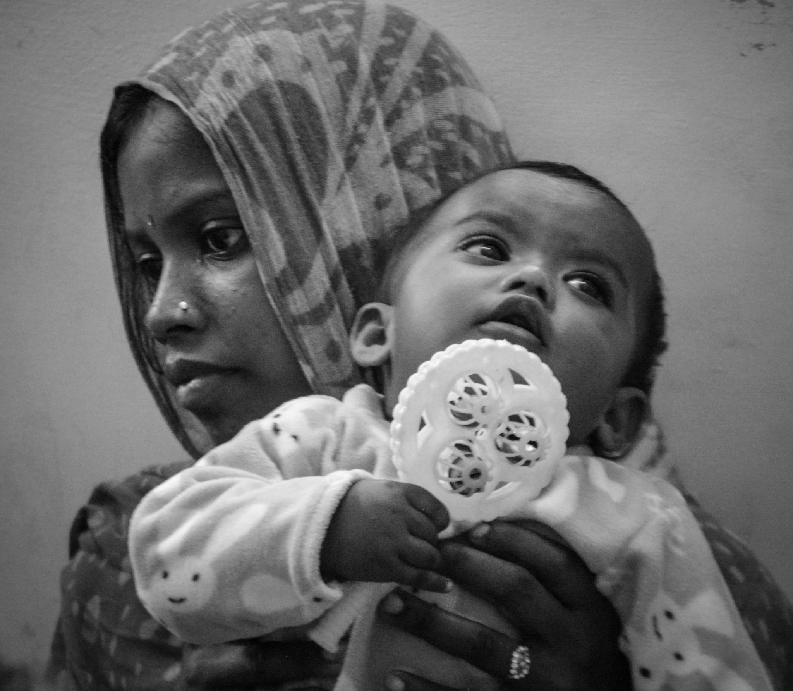
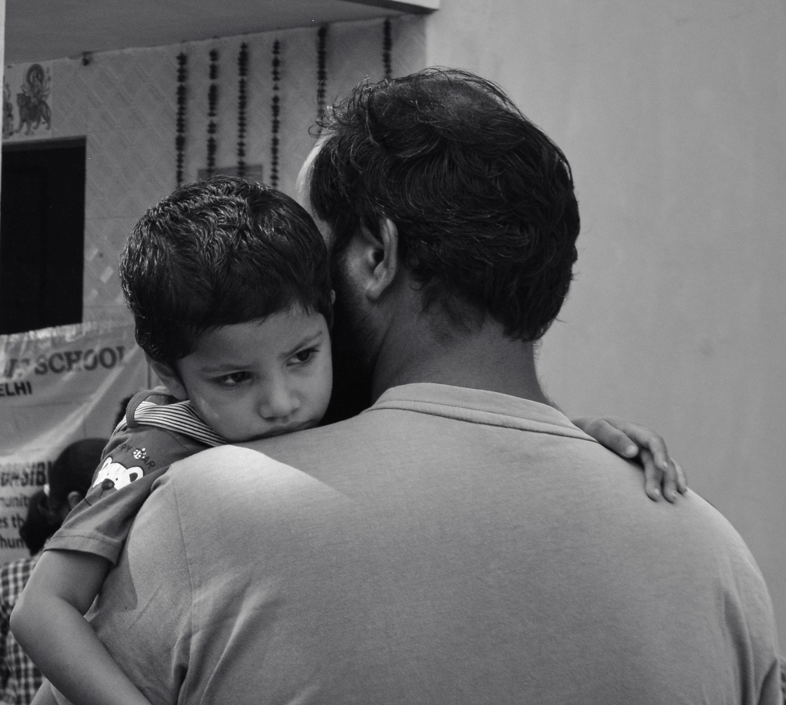
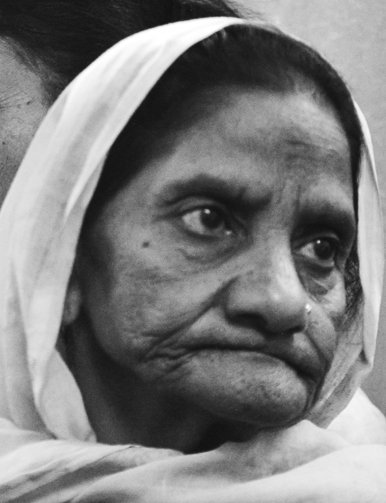
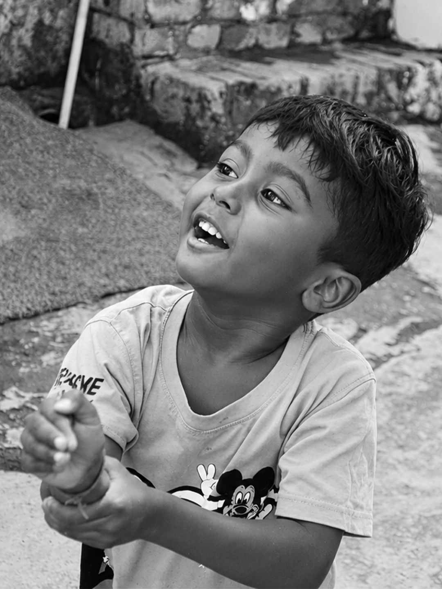
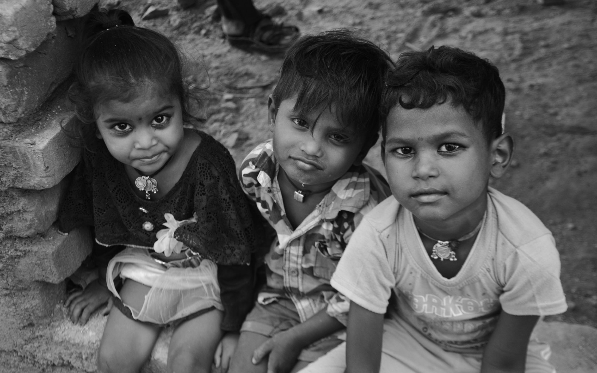
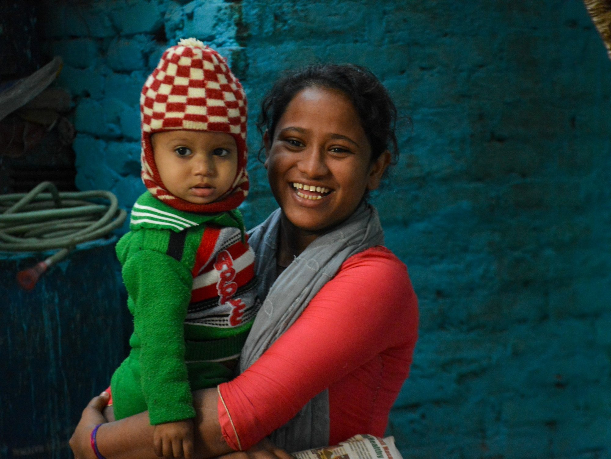

Gaurank Mishra / Photography
← Back to archiveSelected frames · 01—08
Photography
People, gestures, and fleeting moments from everyday life.
BNW





Life in Color

People, gestures, and fleeting moments from everyday life.





